-
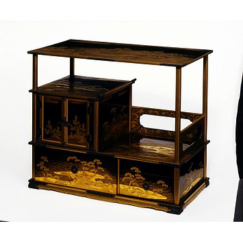Supporting images…

-
 Supporting images…
Supporting images…

-
") Supporting images…
Supporting images…
 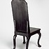
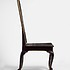
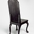
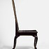
-
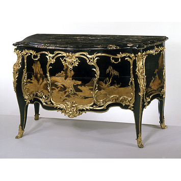Supporting images…
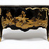 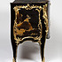
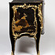
-
 Supporting images…
Supporting images…
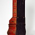 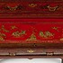
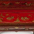

-
 Supporting images…
Supporting images…
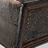
 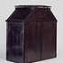
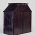
-
Shelved cabinet
About 1850
Japan
Wood covered in black lacquer with takamaki-e (raised sprinkled picture), hiramaki-e (low sprinkled picture) and nashi-ji (pear-skin ground) lacquer, and kirikane (cut gold foil) inlay decoration, with metal fittings.
Museum no. W.350-1916
Several urushi techniques have been used in combination on this piece. As the many lacquer layers were built up, varieties of gold powder were sprinkled on wet lacquer. The underlying relief designs were worked in various lacquer and powder pastes. This was the most ornate type of shelved cabinet traditionally owned by Japanese noble families, and containing numerous small matching boxes.
-
Folding screen
About 1928
France (Paris)
Designed and made by Eileen Gray (1879-1976), restored and altered by Prunella Clough in about 19xxWood with at least two types of black lacquer and red lacquer, with silver leaf and composite decoration; brass hinges.
Given by Prunella Clough
Museum no. W.40-1977Eileen Gray learned the highly specialised craft of lacquer in Paris, under a Japanese master, Seizo Sugawara. On this folding screen, a Japanese furniture form, she applied lacquer using standard methods but omitted the traditional, varied and complex decorative techniques. The resulting aesthetic was very un-Japanese with geometric panels of coarse stucco boldly contrast with flat, mirror-like surfaces.
-
Hall chair
About 1725-30 (overpainting after 1762)
Back and seat board: China (Canton)
Seat rails and legs: England (probably London)Chinese lacquer on a Chinese hardwood, with legs and seat rails decorated with japanning probably on beech; some decoration repainted in oils.
Gift of Brigadier W. E. Clark CMG, DSO through the Art Fund
Museum no. W.16-1962The back and seat boards are lacquered, and were made in China. They were exported to Britain – flat-packed – and assembled on an English frame, japanned black to match. Chinese craftsmen were adept at supplying lacquer for export, following designs provided by Western merchants. However, the requirements of low price and fast turnaround led to a reduction in quality.
-
Commode (chest of drawers)
About 1760-65, using Japanese panels made in the 1670s
France (Paris), incorporating lacquer panels made in Japan (probably Kyoto)
Attributed to Bernard Van Risamburgh II (master before 1735, d. 1765/66)Oak carcase with fruitwood (?) veneers painted black, mounted with panels of wood covered in black lacquer with gold hiramaki-e (low sprinkled picture) and gold takamaki-e (raised sprinkled picture) lacquer, with some japanning; gilt brass mounts; top of Portoro Macchie Larga marble.
Bequeathed by John Jones
Museum no. 1105-1882Shortages in the supply of lacquer to Europe encouraged the dismantling of older, imported furniture such as cabinets. To create this Parisian commode, five sections of urushi lacquered wood were reused. Great skill was required to avoid damaging the lacquer when sawing the double-sided panels, reducing their thickness, and heat-bending them to the curvilinear carcase. Metal mounts conceal the joins.
-
Bureau cabinet
About 1735
England (London) or Germany (Dresden)
Wood, japanned, with engraved brass mounts.
Bequeathed by Sylvia Maud Cowles in memory of her brother John George Thorn-Drury
Museum no. W.8-1972European japanners experimented with numerous techniques and ingredients. On this bureau a coloured alcohol varnish made with plant resin was used. It was relatively quick-drying but the results were delicate. For smoothness, gesso was layered on close-grained wood veneer. Workshops were well-heated for the laborious process of applying, drying and polishing coats of varnish.
-
Table cabinet
About 1620
England (probably London)
Eucalyptus, another tropical hardwood, oak and walnut, painted, gilded and varnished.
Museum no. W.9-1936
Early European imitations of lacquer show varied influences in design and technique. Inspiration probably included East Asian lacquer rarities as well as Indo-Portuguese and Islamic wares similarly exotic in appearance, but decorated using shellac. This cabinet is painted and gilded on a white gesso ground, not ‘japanned’ with multiple coats of varnish, individually polished. A plant resin varnish added lustre and protected the surface.